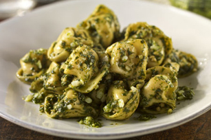

Three-Cheese Pesto Tortellini

Description
This tasty italian pasta recipe is a classic. It is an herbal pasta
seasoned with pesto. The cheese tortellini really brings out
constrasting flavors and allow it to flourish in your mouth. This pesto
sauce can be topped off with cream to give it a more traditional creamy
flavor, or can be left as is and served as a more dry pasta. It's topped
with pine nuts which add texture and flavor to the recipe.
Ingredients
- Package of tortellini
- Package of pesto sauce
- Package of pine nuts
- Cup of half and half
Steps
-
Bring a pot of water to a boil, leave frozen pesto sauce floating
on top of warming water to thaw.
-
Once boiling, add tortellini and cook until soft and warm on the inside.
-
Drain pasta, and in a seperate pan sautee pine nuts in olive oil
on low heat until golden brown.
-
Add pine nuts and pesto to pot of pasta. Turn on heat and add half
and half to taste.
Link back